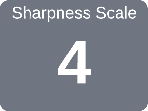

|
Because sharp enough ... usually is not |

|
Hive Tools

|
|
|
Edge Angles |
Traditional Hive Tool (edge view) & Hitchhiker Style Hive Tool |

|
|
|
Edge Angles |
. J-Hook Hive Tool (top view) |
Guidelines shown below are for Hive Box Separating Edges & Scraping Edges.
| α |
The hive box separating edge needs to be very acute so that it can be easily inserted between the boxes to separate them when the bees have been aggressively sealing the boxes together with propolis.
| β |
The scraping edge needs to be useful for scraping propolis and burr comb off the frames and hive boxes. A greater angle (than α) helps keep from damaging the woodenware, and also helps preserve the edge. This could be up to 60° if desired.
The overall goal for this tool's maintenance is that it make the tool's use easier which:
For so work the honey bees, creatures that by a rule in nature, teach the act of order to a peopled kingdom.
William Shakespeare

Click to read more
Hive tool edges do not need to be overly sharp (thusly, the sharpness scale rating of 4). They just need to be easily used. The edges need to be smooth and free from any nicks which would damage the hive boxes.
It is a good practice to round off the corners of this tool to help it not cut through the apiarist’s pocket.
After sharpening your hive tools you should consider acquiring a belt-mounted magnetic tool holder; something like the Bee Smart Magnetic Tool Holder. This will reduce the damage to your pockets, and will help ensure you not leave the tool sitting around on a hive.

Hitchhiker Style Hive Tool
The hitchhiker style hive tool is sharpened in the same way as the traditional hive tool. The outstretched “thumb” should not be sharpened.
The Tormek SVH-60 Straight Edge Jig and SG-250 Grindstone work well for sharpening these tools.
When sharpening hive tools, be cautious about overheating them (if not using a Tormek). The steel's edge can become a bit brittle.